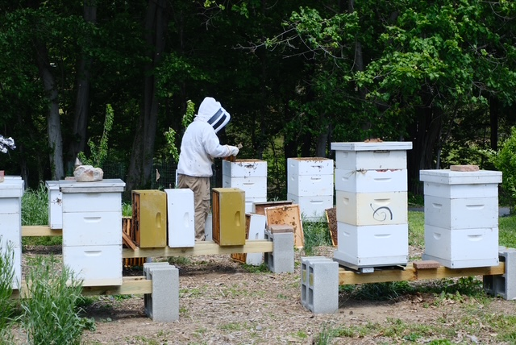

Have land? Host our hives.
We're always looking for good ground for our bees. If you have property in Central PA — a farm, an orchard, a big backyard on the edge of town, a field that mostly grows weeds — we'd love to talk about placing a bee yard on it. We do all the beekeeping. You just enjoy having bees.
You provide the spot. We do the rest.
A working apiary needs more good locations than any one property can offer — bees do best when yards are spread out across the region, close to different nectar sources. That's where hosts come in.
We place anywhere from a few hives to a full bee yard, depending on what your land can support. We handle everything: the equipment, the inspections, the mite management, the harvests, and any issue that comes up. You'll see us stop by through the season to work the bees — beyond that, the hives quietly do their thing.
There's no cost to you, and we're fully insured. Every arrangement is worked out together before a single hive is placed — where the yard sits, how we access it, and what saying thanks looks like (hint: it usually involves honey).

What we look for
- Morning sun. A spot that gets early light — bees start work sooner and colonies stay healthier.
- Vehicle access. We need to get a truck reasonably close, especially at harvest time. No paved road required — a field lane is fine.
- A little breathing room. Some distance from your house, play areas, and your neighbor's property line. Bees mind their business, but nobody wants a hive next to the swing set.
- Water nearby helps. A pond, creek, or ditch is a bonus — if there isn't one, we can provide water at the yard.
- Central PA location. Dauphin, Cumberland, Lebanon, York, and Perry counties — roughly within an hour of Harrisburg.
Not sure if your property qualifies? Ask. We've put bees in some unlikely spots that turned out to be their favorite real estate.
Why landowners host bees
Pollination, free of charge
Gardens, fruit trees, berry patches, clover, wildflowers — everything blooming within a couple miles of the yard gets worked by our bees. Hosts with orchards and big gardens notice the difference in a season.
Honey from your own land
The thank-you gets worked out host by host, but it usually involves jars of honey made — literally — from the flowers on and around your property. There is no more local honey than that.
Support for pollinators
Managed honey bee colonies are under real pressure in Pennsylvania. Every good yard location makes the whole operation more resilient — and keeps more healthy bees working Central PA.
The bees themselves
Some hosts just like having them — watching the flight line on a summer evening, seeing the yard come alive in spring. If you're curious, we're happy to suit you up and show you inside a hive when we're working them.
Hive hosting FAQ
Does it cost me anything?
No. The equipment, the bees, the labor, and the insurance are all ours. You provide the spot.
Will the bees bother my family or pets?
Honey bees away from their hive are focused on flowers, not people. We site yards with sensible distance from houses and activity areas, and we orient hive entrances away from foot traffic. Most hosts forget the bees are there until they see us pull in to work them.
How often will you be on my property?
Roughly every couple of weeks during the active season (spring through fall), less in winter. We'll agree on access arrangements up front — most hosts just wave from the porch.
What if a colony swarms or something goes wrong?
Call or text us and we handle it — that's the whole deal. We're the same crew that does swarm collection and bee removal across Central PA, so there's nobody better positioned to sort out bee surprises quickly.
Can I say no to chemicals on my land?
Talk to us about how you manage your property and we'll tell you honestly whether it works for bees. The reverse matters too: we'll ask that spraying near the yard be coordinated with us, because it can kill a colony fast.
Think your land might be a fit?
Call, text, or send a message — we'll come take a look and talk it through. No obligation either way.
Call or Text 717-379-3248